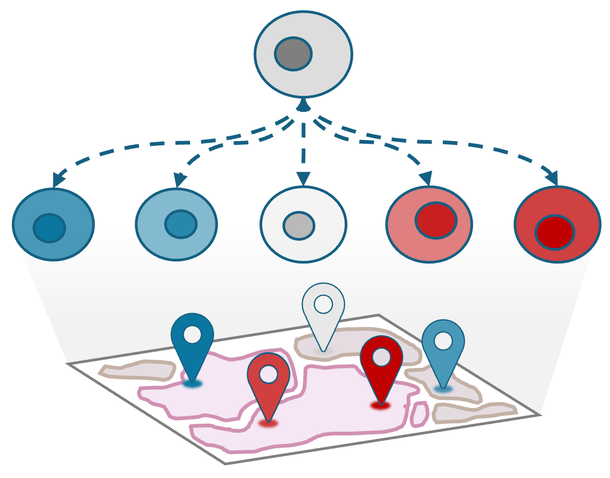
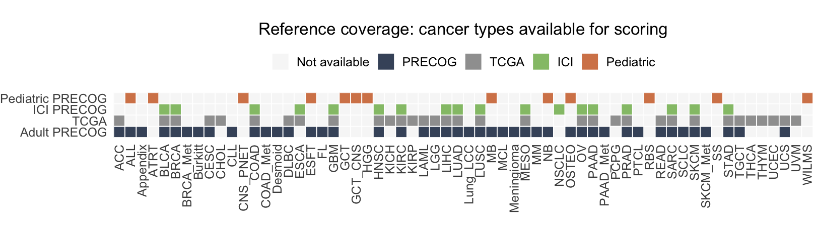

PhenoMapR is a semi-supervised method to map phenotypes associated with bulk gene expression onto bulk, single cell, and spatial transcriptomics data. PhenoMapR nominates and rank-orders samples, cells, and spatial locations associated with gene expression signatures that are correlated with a phenotype of interest (e.g. overall survival).

Introduction
Single-cell and spatial transcriptomics methods provide an improved understanding of the cell types and spatial organization underlying healthy and malignant biology. However, many single-cell and spatial studies lack sufficient sample size for robust associations between a sample phenotype (e.g. overall survival) and cell types or spatial locations. In contrast, lower resolution methods such as bulk gene expression profiling have been applied at scale in large, clinically-annotated datasets, providing robust signatures for phenotype associations. PhenoMapR bridges this gap between the improved resolution of single-cell/spatial approaches and the bulk phenotype signals by mapping the phenotypic signal directly onto individual cells and spatial locations.
PhenoMapR has some benificial functionality:
- Works with Multiple Input Formats: Supports matrices, data.frames, Seurat objects, SingleCellExperiment, SpatialExperiment, and AnnData
- Built-in Bulk Cancer Phenotype References: Adult PRECOG, TCGA, Pediatric PRECOG, and ICI PRECOG datasets
- Flexible Scoring: Cell/spot-level or sample pseudobulk scoring
- Custom Signatures: Generate and/or use your own z-score references
- Efficient: Optimized approach for fast scoring
Installation
# Download PhenoMapR using the following:
if (!require(devtools)) install.packages("devtools")
devtools::install_github("brooksbenard/PhenoMapR")Dependencies (e.g. dplyr, Matrix, glue, progress) will be installed automatically. For Seurat/SCE support, install suggested packages as needed.
Getting Started
The primary function of PhenoMapR is PhenoMap(). The basic use of this function takes a gene x sample/cell/spot expression file + reference phenotype gene x z-score signature and generates a PhenoMapR score x sample/cell/spot dataframe. For single-cell and spatial inputs, a sample-level PhenoMap score can be generated using the pseudobulk argument.
PhenoMap() arguments
- expression: Expression data (matrix, Seurat, SCE, etc.)
- reference: Reference dataset name or custom data.frame
- cancer_type: Cancer type label (required for built-in references)
- z_score_cutoff: Absolute z-score threshold (default: 2)
- pseudobulk: Aggregate before scoring? (default: FALSE)
- group_by: Grouping variable for pseudobulk
- assay: Assay name for Seurat/SCE objects
- slot: Seurat slot (“data”, “counts”, “scale.data”)
- verbose: Print progress messages
# Load **PhenoMapR** in your R session using:
library(PhenoMapR)
# Score a bulk expression matrix
scores <- PhenoMap(
expression = bulk_matrix, # genes x samples
reference = "precog",
cancer_type = "BRCA"
)
# Score single-cell data
scores <- PhenoMap(
expression = seurat_obj,
reference = "tcga",
cancer_type = "LUAD",
assay = "RNA",
slot = "data"
)
# Score with pseudobulk aggregation
scores <- PhenoMap(
expression = seurat_obj,
reference = "ici_precog",
cancer_type = "MELANOMA_Metastatic",
pseudobulk = TRUE,
group_by = "patient_id"
)Supported Input Types
2. Seurat Objects
library(Seurat)
# Single-cell
scores <- PhenoMap(
seurat_obj,
reference = "tcga",
cancer_type = "LUAD",
assay = "RNA",
slot = "data"
)
# Add scores back to Seurat object
seurat_obj <- add_scores_to_seurat(seurat_obj, scores)
# Spatial
scores <- PhenoMap(
spatial_seurat,
reference = "precog",
cancer_type = "BRCA",
assay = "Spatial",
slot = "counts"
)3. SingleCellExperiment
library(SingleCellExperiment)
scores <- PhenoMap(
sce_obj,
reference = "pediatric_precog",
cancer_type = "Neuroblastoma",
assay = "logcounts"
)
# Add scores to colData
sce_obj <- add_scores_to_sce(sce_obj, scores)4. AnnData (Python)
library(reticulate)
adata <- import("scanpy")$read_h5ad("data.h5ad")
scores <- PhenoMap(
adata,
reference = "precog",
cancer_type = "BRCA"
)Reference Datasets
Prognostic meta-z scores and cancer-type labels in PhenoMapR are sourced from PRECOG 2.0 (Benard et al., Nucleic Acids Research 2026). Additional citations for the underlying data and methods:
- PRECOG / TCGA (pan-cancer meta-z and TCGA z-scores): Gentles et al., Nature Medicine 2015 — The prognostic landscape of genes and infiltrating immune cells across human cancers.
- Pediatric PRECOG: Stahl et al., Cancers 2021.
PRECOG
Pan-cancer prognostic meta-analysis (meta-z scores from PRECOG 2.0 / Gentles et al.).
list_cancer_types("precog")
# Examples: "BRCA", "LUAD", "COAD", "PRAD", etc.TCGA
TCGA survival analysis z-scores.
list_cancer_types("tcga")
# Examples: "BRCA", "LUAD", "UCEC", "KIRC", etc.Pediatric
Pediatric cancer prognostic signatures.
list_cancer_types("pediatric_precog")
# Examples: "Neuroblastoma", "Medulloblastoma", etc.ICI (Immune Checkpoint Inhibitor)
Response-related signatures for immunotherapy patients.
list_cancer_types("ici_precog")
# Format: "CANCER" or "CANCER_Metastatic"
# Examples: "MELANOMA", "MELANOMA_Metastatic", "NSCLC", etc.Under the hood

Reference coverage — Cancer types available for scoring in each built-in database (Adult PRECOG, Pediatric PRECOG, TCGA, ICI PRECOG). Use list_cancer_types("precog") (or "tcga", "pediatric_precog", "ici_precog") to see labels for your reference of choice.

At a high level, PhenoMapR:
- Combines pan-cancer prognostic meta-z scores from PRECOG with your expression matrix.
- Filters to strongly prognostic genes (by |z-score|) and aligns gene sets between reference and query data.
- Computes weighted-sum scores per sample/cell/spot, where weights are prognostic z-scores.
- Optionally defines prognostic groups and markers, by slicing the score distribution (e.g. top/bottom 5%) and running differential expression.
Articles
Detailed walkthroughs with public datasets (on the pkgdown site and in the repo under vignettes/):
| Article | Description |
|---|---|
| GSE111672 — Single-cell PAAD | Score PAAD single cells with PRECOG Pancreatic using the included PAAD_GSE111672_seurat.rds; cell type score distributions and prognostic group marker analysis. Data: GEO GSE111672. |
| Spatial transcriptomics | Score spatial transcriptomics spots with PRECOG Pancreatic; score distributions, prognostic groups, and spatial maps of score and group on the tissue image. |
| GSE205154 — Bulk PDAC scoring and survival | Score 289 primary/metastatic bulk samples with PhenoMapR PRECOG references; stratify by primary vs metastatic; Kaplan–Meier survival by prognostic score. Data: GEO GSE205154. |
| GSE205154 — Custom survival-based reference | Build a custom gene z-score reference from GSE205154 expression and survival using derive_reference_from_bulk(), then score samples with that reference. |
Source: vignettes/ in the PhenoMapR repo; built articles appear under Documentation → Articles.
Advanced Usage
Custom Reference Data
# Create custom z-score reference
custom_ref <- data.frame(
row.names = c("TP53", "MYC", "EGFR", "BRCA1"),
my_signature = c(3.2, -2.5, 2.8, 1.9)
)
scores <- PhenoMap(
expression = my_data,
reference = custom_ref,
z_score_cutoff = 1.5
)Derive reference from bulk expression and phenotype
If you have bulk expression (samples × genes) and a phenotype (e.g. response R/NR, survival, or continuous), you can derive gene-level z-scores and use them as the reference for scoring single-cell or spatial data. The function cleans gene names to HUGO symbols, checks/normalizes expression, then computes association z-scores (Cox for survival, logistic regression for binary, correlation for continuous).
# Bulk: samples in rows, genes in columns
bulk_expr <- matrix(...) # e.g. 50 samples × 5000 genes
pheno <- data.frame(
sample_id = rownames(bulk_expr),
response = c("R", "NR", ...) # or time + event for survival
)
# Derive reference z-scores
ref <- derive_reference_from_bulk(
bulk_expression = bulk_expr,
phenotype = pheno,
sample_id_column = "sample_id",
phenotype_column = "response",
phenotype_type = "binary" # or "survival", "continuous", "auto"
)
# Score single-cell or spatial data with the derived reference
scores <- PhenoMap(expression = my_seurat, reference = ref)For survival, provide survival_time and survival_event column names and set phenotype_type = "survival". Optional: install HGNChelper for HUGO symbol cleaning and survival for Cox models.
Pseudobulk Aggregation
# Aggregate single cells by patient before scoring
scores <- PhenoMap(
seurat_obj,
reference = "tcga",
cancer_type = "LUAD",
pseudobulk = TRUE,
group_by = "patient_id"
)Normalize Scores
scores_df <- PhenoMap(...)
# Convert to z-scores
scores_df$score_zscore <- normalize_scores(scores_df[, 1])Prognostic Groups and Marker Genes
Define the top and bottom 5% prognostic cells per dataset (adverse = highest scores, favorable = lowest) and find unique marker genes using Seurat’s FindMarkers (requires Seurat):
# Score and define groups (top 5% = adverse, bottom 5% = favorable)
scores <- PhenoMap(seurat_obj, reference = "precog", cancer_type = "BRCA")
groups <- define_prognostic_groups(scores, percentile = 0.05)
# One group column per score; values: "adverse", "favorable", "middle"
table(groups$prognostic_group_weighted_sum_score_precog_BRCA)
# Find marker genes via Seurat::FindMarkers (adverse vs rest, favorable vs rest)
markers <- find_prognostic_markers(
seurat_obj,
group_labels = groups,
group_column = "prognostic_group_weighted_sum_score_precog_BRCA",
cell_id_column = "cell_id"
)
head(markers$adverse_markers) # genes enriched in top 5% (worst prognosis)
head(markers$favorable_markers) # genes enriched in bottom 5% (best prognosis)Citation
If you use PhenoMapR, please cite the package and the reference datasets:
- PhenoMapR / PRECOG 2.0 (meta-z scores): Benard B et al. PRECOG 2.0: an updated resource of pan-cancer gene-level prognostic meta-z scores. Nucleic Acids Research (2026). https://academic.oup.com/nar/article/54/D1/D1579/8324954
- PRECOG / TCGA: Gentles AJ et al. The prognostic landscape of genes and infiltrating immune cells across human cancers. Nature Medicine 21, 938–945 (2015). https://www.nature.com/articles/nm.3909
- Pediatric PRECOG: Stahl et al. Cancers 13(4), 854 (2021). https://www.mdpi.com/2072-6694/13/4/854
Session info
Session info when PhenoMapR 0.1.0 was last built and checked locally:
ℹ Loading PhenoMapR
R version 4.5.2 (2025-10-31)
Platform: aarch64-apple-darwin20
Running under: macOS Tahoe 26.2
Matrix products: default
BLAS: /System/Library/Frameworks/Accelerate.framework/Versions/A/Frameworks/vecLib.framework/Versions/A/libBLAS.dylib
LAPACK: /Library/Frameworks/R.framework/Versions/4.5-arm64/Resources/lib/libRlapack.dylib; LAPACK version 3.12.1
locale:
[1] C.UTF-8/C.UTF-8/C.UTF-8/C/C.UTF-8/C.UTF-8
time zone: America/Los_Angeles
tzcode source: internal
attached base packages:
[1] stats graphics grDevices utils datasets methods base
other attached packages:
[1] PhenoMapR_0.1.0
loaded via a namespace (and not attached):
[1] crayon_1.5.3 vctrs_0.7.1 cli_3.6.5 rlang_1.1.7
[5] purrr_1.2.1 pkgload_1.5.0 generics_0.1.4 glue_1.8.0
[9] prettyunits_1.2.0 rprojroot_2.1.1 pkgbuild_1.4.8 hms_1.1.4
[13] grid_4.5.2 tibble_3.3.1 ellipsis_0.3.2 fastmap_1.2.0
[17] progress_1.2.3 lifecycle_1.0.5 memoise_2.0.1 compiler_4.5.2
[21] dplyr_1.2.0 fs_1.6.6 sessioninfo_1.2.3 pkgconfig_2.0.3
[25] rstudioapi_0.18.0 lattice_0.22-9 R6_2.6.1 tidyselect_1.2.1
[29] usethis_3.2.1 pillar_1.11.1 magrittr_2.0.4 Matrix_1.7-4
[33] tools_4.5.2 devtools_2.4.6 remotes_2.5.0 cachem_1.1.0
[37] desc_1.4.3 To capture your own session info (e.g. for issues or reports):
# Minimal
sessionInfo()
# With devtools (packages and versions)
devtools::session_info()